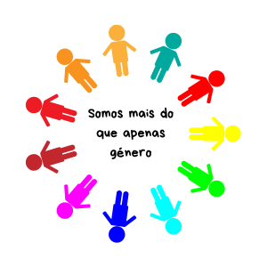

Entenda mais!
A nossa sociedade atual moldou profundamente a forma como enxergamos o outro. Ao longo dos séculos, fomos inseridos em uma estrutura que criou papéis pré-determinados que muitos acreditam que "devem" ser seguidos. Essas expectativas moldam desde as cores que vestimos até as profissões que escolhemos, criando uma espécie de roteiro social que nem sempre condiz com a pluralidade humana.
Qual a diferença?
O maior entrave na compreensão sobre esse assunto é a falta de uma distinção clara entre conceitos que, embora interligados, são independentes. Misturar sexo, gênero e expressão gera ruídos que dificultam o respeito às individualidades. Para desatar esse nó, precisamos entender que a biologia nos dá uma base, mas a cultura constrói o significado sobre ela.
Entenda os “conceitos de género”
Tudo começa no momento em que chegamos ao mundo. O nosso sexo biológico nos é designado ao nascer, baseado em características físicas, como genitais, hormônios e cromossomos. É uma classificação da medicina e da biologia (macho, fêmea ou intersexo). Diferente do sexo, a identidade é uma experiência interna e individual. É como a pessoa se sente em relação a si mesma. Nem sempre a identidade de alguém corresponde ao sexo atribuído no nascimento, e é aqui que compreendemos as vivências de pessoas cisgêneras e transgêneras. Papéis de gênero são o conjunto de comportamentos, funções e responsabilidades que a sociedade considera "apropriados" para homens ou mulheres. Exemplo: A ideia de que o cuidado doméstico é feminino ou que a agressividade é masculina são construções culturais, não biológicas. A forma como "performamos" nosso gênero envolve como nos apresentamos ao mundo: roupas, corte de cabelo, tom de voz e trejeitos. É a nossa comunicação externa, que pode ou não seguir os padrões tradicionais da sociedade. Reflexão: Entender essas diferenças não é apenas uma questão teórica, mas um passo essencial para construirmos uma sociedade onde a autenticidade seja mais valorizada do que a conformidade a moldes antigos.